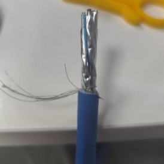
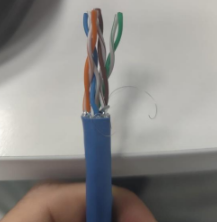
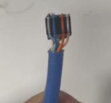
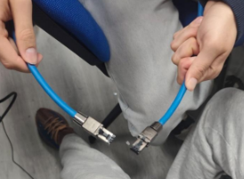

Introducción
En esta actividad se realizaron prácticas relacionadas con el montaje y comprobación de cableado de red.
Se trabajó con cableado CAT6, CAT8 y conexiones de fibra óptica.
Herramientas utilizadas
Para la construcción de los cables se utilizaron herramientas específicas:
- Crimpadora RJ45
- Pelacables
- Tester de red
- Conectores RJ45
Preparación del cable CAT8
Se retiró cuidadosamente el blindaje exterior del cable para exponer los pares trenzados internos.
Debido a las altas velocidades soportadas, el proceso debía realizarse con precisión para evitar interferencias.


Ordenación de hilos
Los pares trenzados fueron separados y alineados siguiendo el estándar T568B.
- Blanco-Naranja
- Naranja
- Blanco-Verde
- Azul
- Blanco-Azul
- Verde
- Blanco-Marrón
- Marrón
Inserción del conector RJ45
Tras ordenar correctamente los hilos, se insertaron dentro del conector RJ45 para posteriormente crimpar el cable.


Comprobación con tester
Finalmente se utilizó un tester de red para verificar la continuidad y funcionamiento correcto del cable.
Fibra óptica
También se realizó el montaje del cable de fibra óptica. Se peló la cubiertá, se retiró la protección blanca, se limó la fibra de vidrio, se recortó a medida y se enchufó el conector.